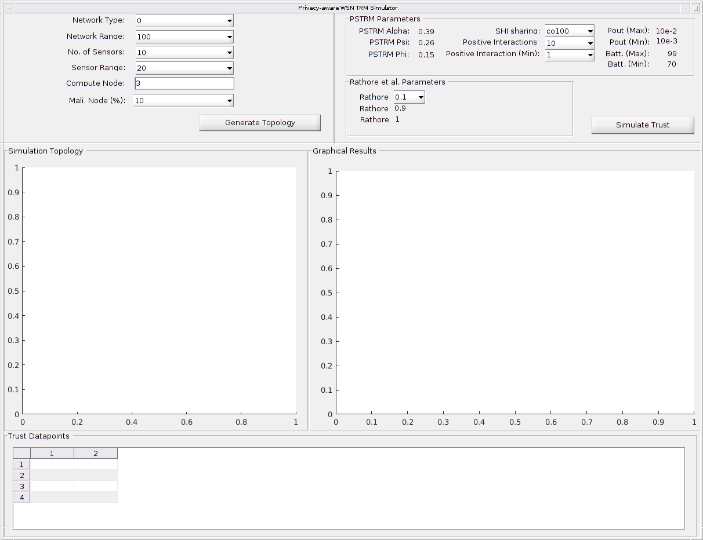

function varargout = pstrm_gui(varargin) % PSTRM_GUI MATLAB code for pstrm_gui.fig % PSTRM_GUI, by itself, creates a new PSTRM_GUI or raises the existing % singleton*. % % H = PSTRM_GUI returns the handle to a new PSTRM_GUI or the handle to % the existing singleton*. % % PSTRM_GUI('CALLBACK',hObject,eventData,handles,...) calls the local % function named CALLBACK in PSTRM_GUI.M with the given input arguments. % % PSTRM_GUI('Property','Value',...) creates a new PSTRM_GUI or raises the % existing singleton*. Starting from the left, property value pairs are % applied to the GUI before pstrm_gui_OpeningFcn gets called. An % unrecognized property name or invalid value makes property application % stop. All inputs are passed to pstrm_gui_OpeningFcn via varargin. % % *See GUI Options on GUIDE's Tools menu. Choose "GUI allows only one % instance to run (singleton)". % % See also: GUIDE, GUIDATA, GUIHANDLES % Edit the above text to modify the response to help pstrm_gui % Last Modified by GUIDE v2.5 08-Jul-2017 18:13:12 % Begin initialization code - DO NOT EDIT gui_Singleton = 1; gui_State = struct('gui_Name', mfilename, ... 'gui_Singleton', gui_Singleton, ... 'gui_OpeningFcn', @pstrm_gui_OpeningFcn, ... 'gui_OutputFcn', @pstrm_gui_OutputFcn, ... 'gui_LayoutFcn', [] , ... 'gui_Callback', []); if nargin && ischar(varargin{1}) gui_State.gui_Callback = str2func(varargin{1}); end if nargout [varargout{1:nargout}] = gui_mainfcn(gui_State, varargin{:}); else gui_mainfcn(gui_State, varargin{:}); end % End initialization code - DO NOT EDIT % --- Executes just before pstrm_gui is made visible. function pstrm_gui_OpeningFcn(hObject, eventdata, handles, varargin) % This function has no output args, see OutputFcn. % hObject handle to figure % eventdata reserved - to be defined in a future version of MATLAB % handles structure with handles and user data (see GUIDATA) % varargin command line arguments to pstrm_gui (see VARARGIN) % Choose default command line output for pstrm_gui handles.output = hObject; %network create class object; a = GuiNetwork; % save obj as a field within handles handles.a = a; rathore_alpha_allItems = get(handles.rathore_alpha,'string'); rathore_alpha_selectedIndex = get(handles.rathore_alpha,'Value'); rathore_alpha = str2double(rathore_alpha_allItems{rathore_alpha_selectedIndex}); set(handles.rathore_beta, 'String', num2str(1 - rathore_alpha)); % Update handles structure guidata(hObject, handles); % UIWAIT makes pstrm_gui wait for user response (see UIRESUME) % uiwait(handles.main_gui); % --- Outputs from this function are returned to the command line. function varargout = pstrm_gui_OutputFcn(hObject, eventdata, handles) % varargout cell array for returning output args (see VARARGOUT); % hObject handle to figure % eventdata reserved - to be defined in a future version of MATLAB % handles structure with handles and user data (see GUIDATA) % Get default command line output from handles structure varargout{1} = handles.output; % --- Executes on slider movement. function slider1_Callback(hObject, eventdata, handles) % hObject handle to slider1 (see GCBO) % eventdata reserved - to be defined in a future version of MATLAB % handles structure with handles and user data (see GUIDATA) % Hints: get(hObject,'Value') returns position of slider % get(hObject,'Min') and get(hObject,'Max') to determine range of slider % --- Executes during object creation, after setting all properties. function slider1_CreateFcn(hObject, eventdata, handles) % hObject handle to slider1 (see GCBO) % eventdata reserved - to be defined in a future version of MATLAB % handles empty - handles not created until after all CreateFcns called % Hint: slider controls usually have a light gray background. if isequal(get(hObject,'BackgroundColor'), get(0,'defaultUicontrolBackgroundColor')) set(hObject,'BackgroundColor',[.9 .9 .9]); end function edit1_Callback(hObject, eventdata, handles) % hObject handle to edit1 (see GCBO) % eventdata reserved - to be defined in a future version of MATLAB % handles structure with handles and user data (see GUIDATA) % Hints: get(hObject,'String') returns contents of edit1 as text % str2double(get(hObject,'String')) returns contents of edit1 as a double % --- Executes during object creation, after setting all properties. function edit1_CreateFcn(hObject, eventdata, handles) % hObject handle to edit1 (see GCBO) % eventdata reserved - to be defined in a future version of MATLAB % handles empty - handles not created until after all CreateFcns called % Hint: edit controls usually have a white background on Windows. % See ISPC and COMPUTER. if ispc && isequal(get(hObject,'BackgroundColor'), get(0,'defaultUicontrolBackgroundColor')) set(hObject,'BackgroundColor','white'); end function edit2_Callback(hObject, eventdata, handles) % hObject handle to edit2 (see GCBO) % eventdata reserved - to be defined in a future version of MATLAB % handles structure with handles and user data (see GUIDATA) % Hints: get(hObject,'String') returns contents of edit2 as text % str2double(get(hObject,'String')) returns contents of edit2 as a double % --- Executes during object creation, after setting all properties. function edit2_CreateFcn(hObject, eventdata, handles) % hObject handle to edit2 (see GCBO) % eventdata reserved - to be defined in a future version of MATLAB % handles empty - handles not created until after all CreateFcns called % Hint: edit controls usually have a white background on Windows. % See ISPC and COMPUTER. if ispc && isequal(get(hObject,'BackgroundColor'), get(0,'defaultUicontrolBackgroundColor')) set(hObject,'BackgroundColor','white'); end function edit3_Callback(hObject, eventdata, handles) % hObject handle to edit3 (see GCBO) % eventdata reserved - to be defined in a future version of MATLAB % handles structure with handles and user data (see GUIDATA) % Hints: get(hObject,'String') returns contents of edit3 as text % str2double(get(hObject,'String')) returns contents of edit3 as a double % --- Executes during object creation, after setting all properties. function edit3_CreateFcn(hObject, eventdata, handles) % hObject handle to edit3 (see GCBO) % eventdata reserved - to be defined in a future version of MATLAB % handles empty - handles not created until after all CreateFcns called % Hint: edit controls usually have a white background on Windows. % See ISPC and COMPUTER. if ispc && isequal(get(hObject,'BackgroundColor'), get(0,'defaultUicontrolBackgroundColor')) set(hObject,'BackgroundColor','white'); end function edit4_Callback(hObject, eventdata, handles) % hObject handle to edit4 (see GCBO) % eventdata reserved - to be defined in a future version of MATLAB % handles structure with handles and user data (see GUIDATA) % Hints: get(hObject,'String') returns contents of edit4 as text % str2double(get(hObject,'String')) returns contents of edit4 as a double % --- Executes during object creation, after setting all properties. function edit4_CreateFcn(hObject, eventdata, handles) % hObject handle to edit4 (see GCBO) % eventdata reserved - to be defined in a future version of MATLAB % handles empty - handles not created until after all CreateFcns called % Hint: edit controls usually have a white background on Windows. % See ISPC and COMPUTER. if ispc && isequal(get(hObject,'BackgroundColor'), get(0,'defaultUicontrolBackgroundColor')) set(hObject,'BackgroundColor','white'); end function edit5_Callback(hObject, eventdata, handles) % hObject handle to edit5 (see GCBO) % eventdata reserved - to be defined in a future version of MATLAB % handles structure with handles and user data (see GUIDATA) % Hints: get(hObject,'String') returns contents of edit5 as text % str2double(get(hObject,'String')) returns contents of edit5 as a double % --- Executes during object creation, after setting all properties. function edit5_CreateFcn(hObject, eventdata, handles) % hObject handle to edit5 (see GCBO) % eventdata reserved - to be defined in a future version of MATLAB % handles empty - handles not created until after all CreateFcns called % Hint: edit controls usually have a white background on Windows. % See ISPC and COMPUTER. if ispc && isequal(get(hObject,'BackgroundColor'), get(0,'defaultUicontrolBackgroundColor')) set(hObject,'BackgroundColor','white'); end function compute_node_Callback(hObject, eventdata, handles) % hObject handle to compute_node (see GCBO) % eventdata reserved - to be defined in a future version of MATLAB % handles structure with handles and user data (see GUIDATA) % Hints: get(hObject,'String') returns contents of compute_node as text % str2double(get(hObject,'String')) returns contents of compute_node as a double % --- Executes during object creation, after setting all properties. function compute_node_CreateFcn(hObject, eventdata, handles) % hObject handle to compute_node (see GCBO) % eventdata reserved - to be defined in a future version of MATLAB % handles empty - handles not created until after all CreateFcns called % Hint: edit controls usually have a white background on Windows. % See ISPC and COMPUTER. if ispc && isequal(get(hObject,'BackgroundColor'), get(0,'defaultUicontrolBackgroundColor')) set(hObject,'BackgroundColor','white'); end function edit7_Callback(hObject, eventdata, handles) % hObject handle to edit7 (see GCBO) % eventdata reserved - to be defined in a future version of MATLAB % handles structure with handles and user data (see GUIDATA) % Hints: get(hObject,'String') returns contents of edit7 as text % str2double(get(hObject,'String')) returns contents of edit7 as a double % --- Executes during object creation, after setting all properties. function edit7_CreateFcn(hObject, eventdata, handles) % hObject handle to edit7 (see GCBO) % eventdata reserved - to be defined in a future version of MATLAB % handles empty - handles not created until after all CreateFcns called % Hint: edit controls usually have a white background on Windows. % See ISPC and COMPUTER. if ispc && isequal(get(hObject,'BackgroundColor'), get(0,'defaultUicontrolBackgroundColor')) set(hObject,'BackgroundColor','white'); end % --- Executes on selection change in net_type. function net_type_Callback(hObject, eventdata, handles) % hObject handle to net_type (see GCBO) % eventdata reserved - to be defined in a future version of MATLAB % handles structure with handles and user data (see GUIDATA) % Hints: contents = cellstr(get(hObject,'String')) returns net_type contents as cell array % contents{get(hObject,'Value')} returns selected item from net_type % --- Executes during object creation, after setting all properties. function net_type_CreateFcn(hObject, eventdata, handles) % hObject handle to net_type (see GCBO) % eventdata reserved - to be defined in a future version of MATLAB % handles empty - handles not created until after all CreateFcns called % Hint: popupmenu controls usually have a white background on Windows. % See ISPC and COMPUTER. if ispc && isequal(get(hObject,'BackgroundColor'), get(0,'defaultUicontrolBackgroundColor')) set(hObject,'BackgroundColor','white'); end % --- Executes on selection change in network_range. function network_range_Callback(hObject, eventdata, handles) % hObject handle to network_range (see GCBO) % eventdata reserved - to be defined in a future version of MATLAB % handles structure with handles and user data (see GUIDATA) % Hints: contents = cellstr(get(hObject,'String')) returns network_range contents as cell array % contents{get(hObject,'Value')} returns selected item from network_range % --- Executes during object creation, after setting all properties. function network_range_CreateFcn(hObject, eventdata, handles) % hObject handle to network_range (see GCBO) % eventdata reserved - to be defined in a future version of MATLAB % handles empty - handles not created until after all CreateFcns called % Hint: popupmenu controls usually have a white background on Windows. % See ISPC and COMPUTER. if ispc && isequal(get(hObject,'BackgroundColor'), get(0,'defaultUicontrolBackgroundColor')) set(hObject,'BackgroundColor','white'); end % --- Executes on selection change in no_of_sensors. function no_of_sensors_Callback(hObject, eventdata, handles) % hObject handle to no_of_sensors (see GCBO) % eventdata reserved - to be defined in a future version of MATLAB % handles structure with handles and user data (see GUIDATA) % Hints: contents = cellstr(get(hObject,'String')) returns no_of_sensors contents as cell array % contents{get(hObject,'Value')} returns selected item from no_of_sensors % --- Executes during object creation, after setting all properties. function no_of_sensors_CreateFcn(hObject, eventdata, handles) % hObject handle to no_of_sensors (see GCBO) % eventdata reserved - to be defined in a future version of MATLAB % handles empty - handles not created until after all CreateFcns called % Hint: popupmenu controls usually have a white background on Windows. % See ISPC and COMPUTER. if ispc && isequal(get(hObject,'BackgroundColor'), get(0,'defaultUicontrolBackgroundColor')) set(hObject,'BackgroundColor','white'); end % --- Executes on selection change in sensor_range. function sensor_range_Callback(hObject, eventdata, handles) % hObject handle to sensor_range (see GCBO) % eventdata reserved - to be defined in a future version of MATLAB % handles structure with handles and user data (see GUIDATA) % Hints: contents = cellstr(get(hObject,'String')) returns sensor_range contents as cell array % contents{get(hObject,'Value')} returns selected item from sensor_range % --- Executes during object creation, after setting all properties. function sensor_range_CreateFcn(hObject, eventdata, handles) % hObject handle to sensor_range (see GCBO) % eventdata reserved - to be defined in a future version of MATLAB % handles empty - handles not created until after all CreateFcns called % Hint: popupmenu controls usually have a white background on Windows. % See ISPC and COMPUTER. if ispc && isequal(get(hObject,'BackgroundColor'), get(0,'defaultUicontrolBackgroundColor')) set(hObject,'BackgroundColor','white'); end % --- Executes on selection change in mali_node. function mali_node_Callback(hObject, eventdata, handles) % hObject handle to mali_node (see GCBO) % eventdata reserved - to be defined in a future version of MATLAB % handles structure with handles and user data (see GUIDATA) % Hints: contents = cellstr(get(hObject,'String')) returns mali_node contents as cell array % contents{get(hObject,'Value')} returns selected item from mali_node % --- Executes during object creation, after setting all properties. function mali_node_CreateFcn(hObject, eventdata, handles) % hObject handle to mali_node (see GCBO) % eventdata reserved - to be defined in a future version of MATLAB % handles empty - handles not created until after all CreateFcns called % Hint: popupmenu controls usually have a white background on Windows. % See ISPC and COMPUTER. if ispc && isequal(get(hObject,'BackgroundColor'), get(0,'defaultUicontrolBackgroundColor')) set(hObject,'BackgroundColor','white'); end % --- Executes on button press in generate_network. function generate_network_Callback(hObject, eventdata, handles) % hObject handle to generate_network (see GCBO) % eventdata reserved - to be defined in a future version of MATLAB % handles structure with handles and user data (see GUIDATA) clc; if isfield(handles,'a') myObj = handles.a; myObj.compute_node_id = str2double(get(handles.compute_node, 'String')); % set compute node of networkobject %disp(a.compute_node_id); %set netywork_range network_range_allItems = get(handles.network_range,'string'); network_range_selectedIndex = get(handles.network_range,'Value'); myObj.network_size = str2double(network_range_allItems{network_range_selectedIndex}); %disp(a.network_size); % set network type of the network object net_type_allItems = get(handles.net_type,'string'); net_type_selectedIndex = get(handles.net_type,'Value'); myObj.net_type = str2double(net_type_allItems{net_type_selectedIndex}); %guidata(hObject, handles); %disp(a.net_type); % set sensor range for the network object sensor_range_allItems = get(handles.sensor_range,'string'); sensor_range_selectedIndex = get(handles.sensor_range,'Value'); myObj.sensor_range = str2double(sensor_range_allItems{sensor_range_selectedIndex}); %disp(a.sensor_range); %guidata(hObject, handles); %set No. of nodes in network no_of_node_allItems = get(handles.no_of_sensors,'string'); no_of_node_selectedIndex = get(handles.no_of_sensors,'Value'); myObj.num_of_nodes = str2double(no_of_node_allItems{no_of_node_selectedIndex}); noOfNodes = myObj.num_of_nodes; %disp(myObj); %set No. of nodes in network mali_node_allItems = get(handles.mali_node,'string'); mali_node_selectedIndex = get(handles.mali_node,'Value'); mali_node_percentage = str2double(mali_node_allItems{mali_node_selectedIndex}); try [node_x, node_y] = generate_net(myObj); cla(handles.topology); axes(handles.topology); for i = 1:noOfNodes plot(node_x(i), node_y(i), '.'); % plot the sensor nodes on the field hold on; xlim([0, myObj.network_size]); ylim([0, myObj.network_size]); text(node_x(i), node_y(i), num2str(i)); % plot the label numbers of the sensor nodes for j = 1:noOfNodes distance = sqrt((node_x(i) - node_x(j))^2 + (node_y(i) - node_y(j))^2); if distance <= myObj.sensor_range matrix(i, j) = 1; % there is a link line([node_x(i) node_x(j)], [node_y(i) node_y(j)], 'LineStyle', ':'); % show coverage connector else matrix(i, j) = inf; % there is no link end end end highlight_compute_node(myObj, myObj.compute_node_id, node_x, node_y); % select trustor node on the network [x_neigh_cor,y_neigh_cor, neigh_label] = get_neighbours(myObj,myObj.compute_node_id, node_x, node_y, matrix); % determine the cordinates and labels for neighbours of the trustor node highlight_neighbours(myObj, x_neigh_cor, y_neigh_cor); % select neighbours (within the neighbourhood) of trustor on the network [x_mali_cor, y_mali_cor, mali_label, actual_mali_trust] = place_malicious_nodes(myObj,mali_node_percentage, x_neigh_cor, y_neigh_cor, neigh_label); % identify the malicious nodes (candidate trustees) within the neighbourhood of the trustor catch ErrorMessage=lasterr; disp(ErrorMessage); end handles.mali_node_percentage = mali_node_percentage; handles.node_x = node_x; handles.node_y = node_y; handles.matrix = matrix; handles.x_neigh_cor = x_neigh_cor; handles.y_neigh_cor = y_neigh_cor; handles.neigh_label = neigh_label; handles.x_mali_cor = x_mali_cor; handles.y_mali_cor = y_mali_cor; handles.actual_mali_trust = actual_mali_trust; handles.mali_label = mali_label; handles.myObj = myObj; guidata(hObject, handles); end % [x_neigh_cor,y_neigh_cor, neigh_label] = get_neighbours(a,a.compute_node_id, node_x, node_y, net_plot_matrix); % determine the cordinates and labels for neighbours of the trustor node % % highlight_neighbours(a, x_neigh_cor, y_neigh_cor); % select neighbours (within the neighbourhood) of trustor on the network % % percentage_of_malicious_neighbours = 40; % set the percentage of nodes in neighbourhood that should be malicious. % % --- Executes during object creation, after setting all properties. function main_gui_CreateFcn(hObject, eventdata, handles) % hObject handle to main_gui (see GCBO) % eventdata reserved - to be defined in a future version of MATLAB % handles empty - handles not created until after all CreateFcns called % --- Executes on key press with focus on compute_node and none of its controls. function compute_node_KeyPressFcn(hObject, eventdata, handles) % hObject handle to compute_node (see GCBO) % eventdata structure with the following fields (see MATLAB.UI.CONTROL.UICONTROL) % Key: name of the key that was pressed, in lower case % Character: character interpretation of the key(s) that was pressed % Modifier: name(s) of the modifier key(s) (i.e., control, shift) pressed % handles structure with handles and user data (see GUIDATA) % --- Executes on button press in simulate. function simulate_Callback(hObject, eventdata, handles) % hObject handle to simulate (see GCBO) % eventdata reserved - to be defined in a future version of MATLAB % handles structure with handles and user data (see GUIDATA) if isfield(handles,'myObj') %shi_sharing shi_sharing_allItems = get(handles.shi_sharing,'string'); shi_sharing_selectedIndex = get(handles.shi_sharing,'Value'); shi_sharing = (shi_sharing_allItems{shi_sharing_selectedIndex}); %posmax posmax_allItems = get(handles.posmax,'string'); posmax_selectedIndex = get(handles.posmax,'Value'); posmax = str2double(posmax_allItems{posmax_selectedIndex}); %posmin posmin_allItems = get(handles.posmin,'string'); posmin_selectedIndex = get(handles.posmin,'Value'); posmin = str2double(posmin_allItems{posmin_selectedIndex}); %rathore_alpha rathore_alpha_allItems = get(handles.rathore_alpha,'string'); rathore_alpha_selectedIndex = get(handles.rathore_alpha,'Value'); rathore_alpha = str2double(rathore_alpha_allItems{rathore_alpha_selectedIndex}); %rathore_beta rathore_beta = str2double(get(handles.rathore_beta,'string')); %rathore_ability rathore_ability = str2double(get(handles.rathore_ability,'string')); if (posmax > posmin) try [mali_bat, mali_pout] = generate_mali_param(handles.myObj, handles.x_mali_cor); % generate the battery_levels and outage probability of malicious nodes ability = compute_ability(handles.myObj, mali_bat, mali_pout); % compute the ability of all malicious nodes in neighbourhood [diff_labels,diff_label_ids] = setdiff(handles.neigh_label,handles.mali_label); % get non-malicious node ids and labels indirect_info = compute_indirect_info(handles.myObj, handles.actual_mali_trust , shi_sharing, diff_labels); % generate the indirect information of all malicious nodes on each node % sensor node average_indirect = average_indirect_values(handles.myObj, indirect_info); % average all the received indirect information from all the sensor nodes concerning nodes benevolence = compute_benevolence(handles.myObj, handles.actual_mali_trust, average_indirect); [positives, negatives] = generate_consistency_parameters(handles.myObj, posmin, posmax, numel(handles.mali_label)); consistency = compute_consistency(handles.myObj, positives, negatives); measured_trust = compute_pstrm_trust(handles.myObj, ability, benevolence, consistency); rathore_trust = compute_rathore_trust(handles.myObj, rathore_alpha, rathore_beta, rathore_ability, (handles.actual_mali_trust - average_indirect), consistency); direct_benevolence = compute_direct_benevolence(handles.myObj, handles.actual_mali_trust); actual_direct_trust = compute_direct_trust(handles.myObj, ability, direct_benevolence, consistency); cla(handles.results); axes(handles.results); axis 'auto y'; axis 'auto x'; ylim([0, 1]); semilogy(handles.actual_mali_trust,'go-'); hold on; grid on; semilogy(measured_trust,'bh-'); semilogy(actual_direct_trust,'cd-'); semilogy(rathore_trust,'m^-'); size_mali = numel(handles.mali_label); for i = 1:size_mali new_label(:,i) = strcat({'Node '}, {num2str(handles.mali_label(i))}); end set(gca, 'xtick', (1:1:size_mali), 'xticklabel', new_label, 'FontSize', 8); %title('Sociopsychological Trust Computations'); legend({'random actual', 'pstrm', 'direct', 'rathore et al.'}, 'FontSize', 8, 'Location', 'northeast', 'Orientation', 'horizontal'); xlabel('Malicious Nodes', 'FontSize', 8); ylabel('Trust', 'FontSize', 8); catch ErrorMessage=lasterr; disp(ErrorMessage); end else disp('Positive Interaction (max) is less than Positive Interaction (min)'); end else disp('Please generate topology first'); end new_matrix = [measured_trust; rathore_trust; actual_direct_trust; handles.actual_mali_trust]; new_matrix = transpose(new_matrix); row_label = {'PSTRM';'Rathore et al.'; 'Direct Trust'; 'Random Actual'}; set(handles.pstrm_table,'Data',[], 'ColumnName', [], 'RowName', []); set(handles.pstrm_table,'data',new_matrix,'ColumnName',row_label, 'RowName', new_label); handles.mali_bat = mali_bat; handles.mali_pout = mali_pout; handles.ability = ability; handles.indirect_info = indirect_info; handles.average_indirect = average_indirect; handles.benevolence = benevolence; handles.positives = positives; handles.negatives = negatives; handles.consistency = consistency; handles.measured_trust = measured_trust; handles.rathore_trust = rathore_trust; handles.direct_benevolence = direct_benevolence; handles.actual_direct_trust = actual_direct_trust; guidata(hObject, handles); %set(handles.alpha, 'String', handles.mali_node_percentage); % --- Executes on selection change in rathore_alpha. function rathore_alpha_Callback(hObject, eventdata, handles) % hObject handle to rathore_alpha (see GCBO) % eventdata reserved - to be defined in a future version of MATLAB % handles structure with handles and user data (see GUIDATA) rathore_alpha_allItems = get(handles.rathore_alpha,'string'); rathore_alpha_selectedIndex = get(handles.rathore_alpha,'Value'); rathore_alpha = str2double(rathore_alpha_allItems{rathore_alpha_selectedIndex}); set(handles.rathore_beta, 'String', num2str(1 - rathore_alpha)); % Hints: contents = cellstr(get(hObject,'String')) returns rathore_alpha contents as cell array % contents{get(hObject,'Value')} returns selected item from rathore_alpha % --- Executes during object creation, after setting all properties. function rathore_alpha_CreateFcn(hObject, eventdata, handles) % hObject handle to rathore_alpha (see GCBO) % eventdata reserved - to be defined in a future version of MATLAB % handles empty - handles not created until after all CreateFcns called % Hint: popupmenu controls usually have a white background on Windows. % See ISPC and COMPUTER. if ispc && isequal(get(hObject,'BackgroundColor'), get(0,'defaultUicontrolBackgroundColor')) set(hObject,'BackgroundColor','white'); end % --- Executes on selection change in shi_sharing. function shi_sharing_Callback(hObject, eventdata, handles) % hObject handle to shi_sharing (see GCBO) % eventdata reserved - to be defined in a future version of MATLAB % handles structure with handles and user data (see GUIDATA) % Hints: contents = cellstr(get(hObject,'String')) returns shi_sharing contents as cell array % contents{get(hObject,'Value')} returns selected item from shi_sharing % --- Executes during object creation, after setting all properties. function shi_sharing_CreateFcn(hObject, eventdata, handles) % hObject handle to shi_sharing (see GCBO) % eventdata reserved - to be defined in a future version of MATLAB % handles empty - handles not created until after all CreateFcns called % Hint: popupmenu controls usually have a white background on Windows. % See ISPC and COMPUTER. if ispc && isequal(get(hObject,'BackgroundColor'), get(0,'defaultUicontrolBackgroundColor')) set(hObject,'BackgroundColor','white'); end % --- Executes on selection change in posmin. function posmin_Callback(hObject, eventdata, handles) % hObject handle to posmin (see GCBO) % eventdata reserved - to be defined in a future version of MATLAB % handles structure with handles and user data (see GUIDATA) % Hints: contents = cellstr(get(hObject,'String')) returns posmin contents as cell array % contents{get(hObject,'Value')} returns selected item from posmin % --- Executes during object creation, after setting all properties. function posmin_CreateFcn(hObject, eventdata, handles) % hObject handle to posmin (see GCBO) % eventdata reserved - to be defined in a future version of MATLAB % handles empty - handles not created until after all CreateFcns called % Hint: popupmenu controls usually have a white background on Windows. % See ISPC and COMPUTER. if ispc && isequal(get(hObject,'BackgroundColor'), get(0,'defaultUicontrolBackgroundColor')) set(hObject,'BackgroundColor','white'); end % --- Executes on selection change in posmax. function posmax_Callback(hObject, eventdata, handles) % hObject handle to posmax (see GCBO) % eventdata reserved - to be defined in a future version of MATLAB % handles structure with handles and user data (see GUIDATA) % Hints: contents = cellstr(get(hObject,'String')) returns posmax contents as cell array % contents{get(hObject,'Value')} returns selected item from posmax % --- Executes during object creation, after setting all properties. function posmax_CreateFcn(hObject, eventdata, handles) % hObject handle to posmax (see GCBO) % eventdata reserved - to be defined in a future version of MATLAB % handles empty - handles not created until after all CreateFcns called % Hint: popupmenu controls usually have a white background on Windows. % See ISPC and COMPUTER. if ispc && isequal(get(hObject,'BackgroundColor'), get(0,'defaultUicontrolBackgroundColor')) set(hObject,'BackgroundColor','white'); end